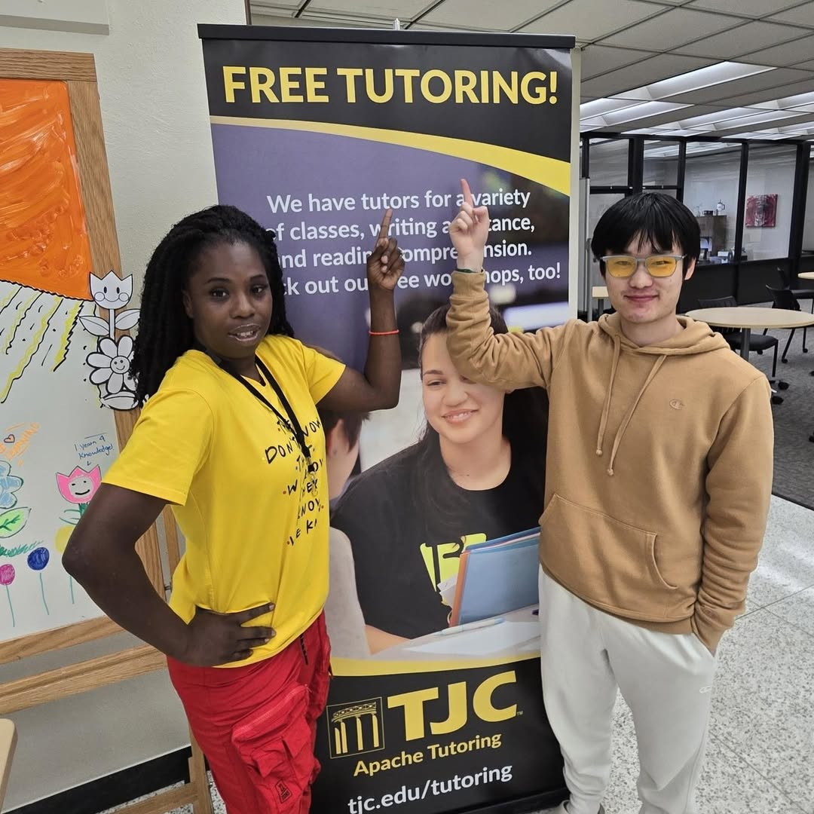

Giving Back to the Community
My goal is to foster the next generation of technologists with an emphasis on ethical thinking and creative innovation.
Mentorship & Teaching
As a former Peer Tutor and Coding Camp Assistant, I have experience translating complex topics in Data Structures, Algorithms, and introductory programming for learners of all levels—from young children to university students. This practice in demystifying technical concepts for diverse audiences has become a cornerstone of my collaborative approach.

Corps of Cadets Leadership
Looking forward, I intend to leverage the discipline and leadership training I have gained in the Corps of Cadets and Corps Cybersecurity Unit to organize structured mentorship programs.
I aim to create peer-led study groups that not only assist with coursework but also help underclassmen navigate the rigors of balancing academic excellence with regimental duties. I believe that being an effective programmer extends beyond personal technical skill; it involves building a community where knowledge is shared freely and supportively.